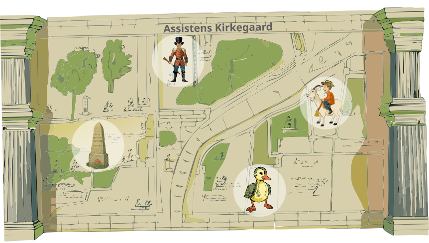
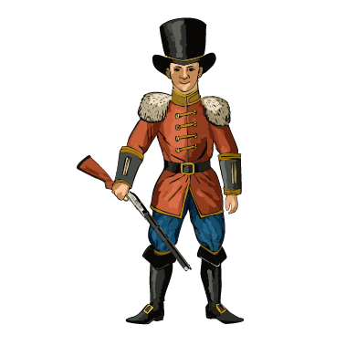
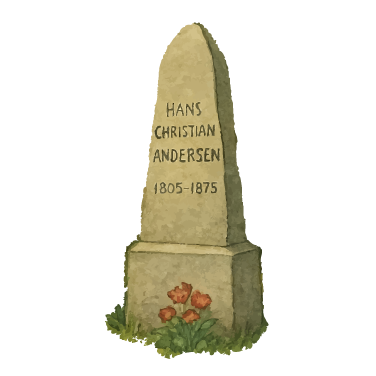
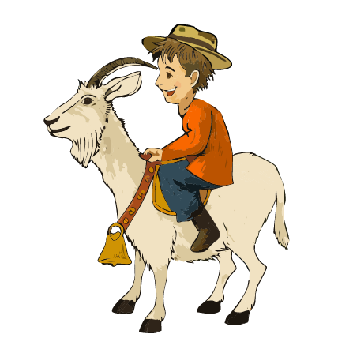
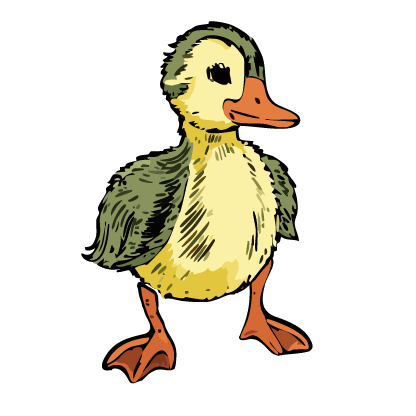

Lyt til Fyrtøjet

H.C. Andersens gravsted

Lyt til Klods Hans

Den Grimme Ælling

Magiske oplevelser på Assistens Kirkegård


Lyt til Fyrtøjet

H.C. Andersens gravsted

Lyt til Klods Hans

Den Grimme Ælling